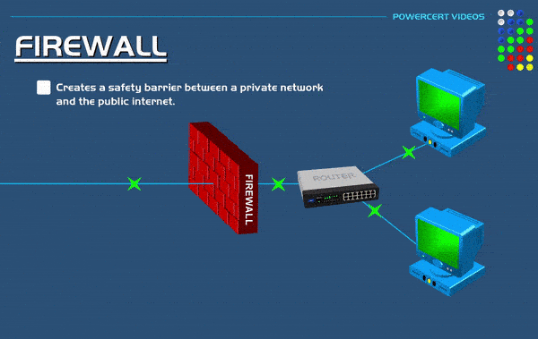
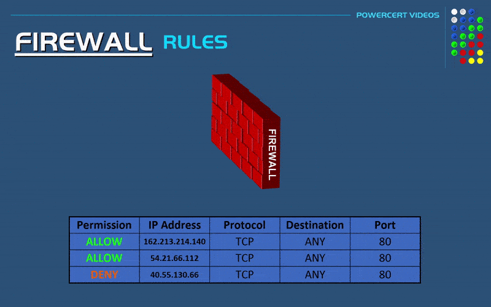
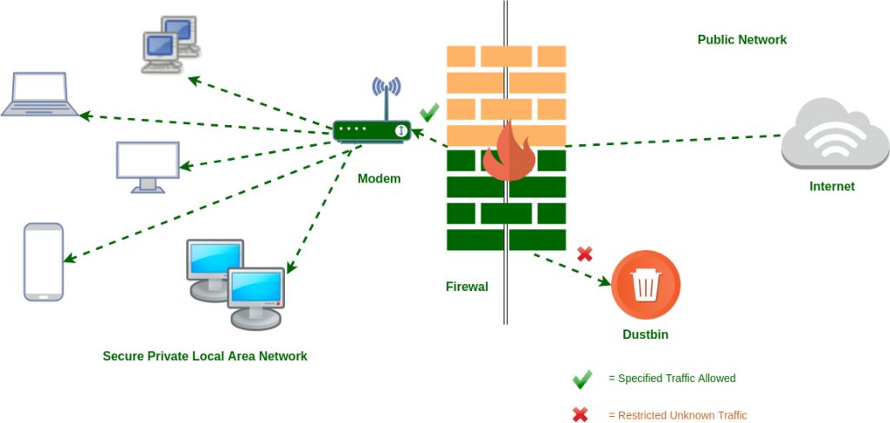

What is Firewall?
A firewall is a security software or hardware that monitors incoming and outgoing network traffic according to the rules it contains and allows the passage of network packets or prevents the passage of packets according to the nature of the rule.
Types of Firewall
A firewall is divided into many different types according to its features:
Application-Level Gateways (Proxy Firewalls)
Application-Level Gateways (Proxy Firewalls) are a type of firewall that functions at the application layer between two end systems. Unlike basic firewalls, it captures and analyzes packets in the application layer according to the OSI model. In this way, it works as an additional security measure on the application layer.
Circuit-Level Gateways
Circuit-Level Gateways are a type of firewall that can be easily configured, has low resource consumption, and has a simplified structure. These types of firewalls verify TCP connections and sessions and operate in the session layer of the OSI model.
Cloud Firewalls
Cloud Firewalls are the type of firewall used when the institution receives firewall service over the cloud as a service. Another name is “FWaaS” (firewall-as-a-service). There are some advantages to using a cloud firewall. For example, cloud firewalls have no physical resources, so they can be easily reconfigured based on demand or traffic load. Additional capacity can be added to accommodate increased traffic.
Endpoint Firewalls
Endpoint Firewalls are a type of host-based firewall installed on devices. It is a type of firewall that is often difficult to manage. It is an important component that must be used to ensure security. For example, the “Windows Defender Firewall”, which comes pre-installed in Windows, is an example of this type of firewall.
Network Address Translation (NAT) Firewalls
Network Address Translation (NAT) Firewalls are a type of firewall designed to access internet traffic and block unwanted connections. Such firewalls are used to hide the IP addresses in the internal network from the external network. In other words, it is the firewall where NAT is applied.
Next-Generation Firewalls (NGFW)
Next-Generation Firewalls (NGFW) are a type of firewall that combines the features of different firewalls available under the conditions of that day on a single firewall. These firewalls have a deep-packet inspection (DPI) feature. This type of firewall is designed to block external threats, malware attacks, and advanced attack methods.
Packet-Filtering Firewalls
Packet-Filtering Firewalls are the most basic type of firewall. It has a feature that monitors network traffic and filters incoming packets according to configured rules. A packet-Filtering firewall blocks the destination port if the incoming packet does not match the rule set. This firewall is one of the quick solutions that can be used without many resource requirements. But there are also some disadvantages. For example, it lacks the ability to block web-based attacks.
Stateful Multi-Layer Inspection (SMLI) Firewalls
Stateful Multi-Layer Inspection (SMLI) Firewall is a type of firewall capable of both packet inspection and TCP handshake verification. With these features, it stands out from other firewalls. It also has the feature of tracking the status of established connections.
Threat-Focused NGFW
Threat-Focused NGFW has all the features of an NGFW-type firewall. In addition, it has advanced threat detection features. Thanks to this feature, it can react quickly to attacks. It helps to provide security more effectively thanks to the rules written with a threat focus. Since it monitors every malicious activity from beginning to end, it runs the process faster by shortening the time from the first time it detects the threat to the cleaning phase.
Unified Threat Management (UTM) Firewalls
Unified Threat Management (UTM) Firewalls are a special type of stateful inspection firewalls with antivirus and intrusion prevention.
How Firewall Works
Although there are many types of firewall devices, they basically work with the same logic. Some rules are needed for a firewall to work. The firewall rule is the part that is checked to decide whether to allow or block the passage of network packets coming to the firewall. For example, firewall rules can be created to prevent two departments from accessing each other’s network within an organization. In this way, a kind of network segmentation is provided and security is increased by interrupting the communication of devices that do not need to communicate with each other. The working principle of a Firewall is basically as follows:

How the firewall manages network packets by rules is shown below:

As can be seen above, the passage of incoming packets is allowed or the passage of packets is blocked according to the details in the rules.
Importance of Firewall for Security
A firewall is one of the most basic security solutions that should be included in a network. It would not be right to talk about the complete security of a corporate network without a firewall. In addition to being in the existing network, it is also very important that the firewall is correctly configured and managed. It is not possible to protect the network or related host from attacks using only a firewall.
Some popular Firewall products used in the cybersecurity industry are as follows:
- Fortinet
- Palo Alto Networks
- SonicWall
- Checkpoint
- Juniper
- pfsense
- Sophos
What log resources does Firewall have?
Firewall products have logs about network flow because they do network-based filtering. For example, below is some information from firewall logs:
- Date/Time information
- Source IP Address
- Destination IP Address
- Source Port
- Destination Port
- Action Information
- Number of Packets Sent
- Number of Packets Received
Physical Location of Firewall Device
Firewall devices can be located in different places in the network according to their types. For example, the host-based firewall is used to filter inbound/outbound traffic in front of that host. If we consider a corporate network in general terms, a firewall should be located at the interfaces of the institution that go to the internet or at the external interface. The device that will meet the packets coming from the internet even before they come to the IDS / IPS devices is the firewall device.
